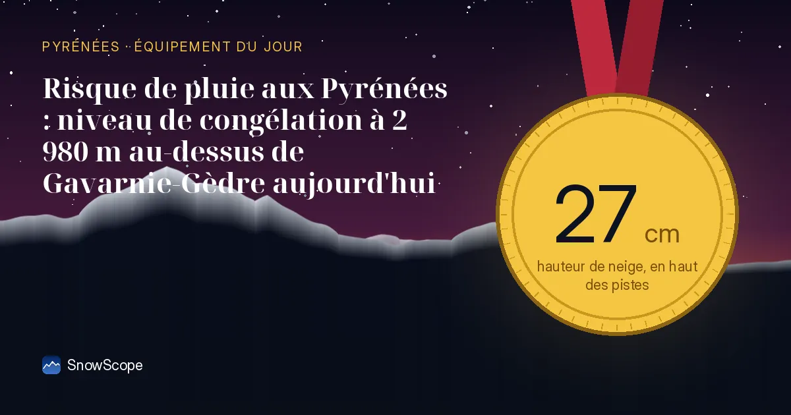

Risque de pluie aux Pyrénées : niveau de congélation à 2 980 m au-dessus de Gavarnie-Gèdre aujourd'hui
La pluie tombe au-dessus du sommet de Gavarnie-Gèdre aujourd'hui, le niveau de congélation se situant à 2 980 m bien au-dessus du dernier télésiège à 2 283 m. Au cours des trois prochains jours cependant, l'air froid s'installe et la neige revient sur les Pyrénées—un changement brutal qui modifie votre équipement.
Consultez les prévisions neige en temps réel pour Gavarnie-Gèdre sur l'application SnowScopeHauteurs de neige, alertes poudreuse et carte 3D, gratuitement.
Aujourd'hui : pluie et neige fine en altitude
Le niveau de congélation se situe actuellement à 2 980 m, ce qui signifie que la pluie tombe sur les pentes les plus hautes de Gavarnie-Gèdre. Les pentes supérieures ne retiennent que 27 cm de neige, donc toute pluie s'infiltrera jusqu'à la base et formera une croûte. Val-Louron et Formiguères font face au même risque : tous deux ont un maigre manteau neigeux (25 cm et 21 cm) et des niveaux de congélation bien au-dessus de leurs sommets aujourd'hui.
Au cours des dernières 24 heures, Gavarnie-Gèdre a reçu 4 cm de neige fraîche, mais les températures sont trop chaudes pour qu'elle reste sèche. L'eau qui s'infiltre dans ce maigre manteau neigeux s'écoulera rapidement vers le bas et alimentera les ruisseaux ci-dessous—c'est de la neige de début de saison qui agit comme un réservoir temporaire avant qu'elle ne s'écoule en grande partie.
| Station | Hauteur de neige | Neige fraîche, 72 h | Attendu, jours suivants | Sommet |
|---|---|---|---|---|
| Gavarnie-Gèdre | 27 cm | 7 cm | 14 cm | 2 283 m |
| Val-Louron | 25 cm | 2 cm | 5 cm | 2 071 m |
| Formiguères | 21 cm | 3 cm | 6 cm | 2 305 m |
| Cauterets Cirque du Lys | 19 cm | 13 cm | 17 cm | 2 420 m |
| Piau-Engaly | 16 cm | 13 cm | 15 cm | 2 527 m |

Ce qui change au cours des deux prochains jours
Demain, 22 novembre, le niveau de congélation descend à 2 090 m à Gavarnie-Gèdre, et le 23 il tombe encore à 1 990 m. L'air froid remplace le régime chaud et humide. La neige va recommencer à s'accumuler : Gavarnie-Gèdre devrait recevoir 14 cm au cours des trois prochains jours, tandis que Cauterets Cirque du Lys et Piau-Engaly devraient tous deux gagner 15-17 cm.
Ce contraste est crucial pour planifier votre équipement. Aujourd'hui vous avez affaire à la croûte et au fonte ; dans 48 heures, vous avez affaire à la neige fraîche sur une base plus ferme. Les Pyrénées basculeront d'un système riche en eau à un système de stockage à froid presque du jour au lendemain.

La neige la plus épaisse se trouve aux stations les plus hautes
Piau-Engaly et Cauterets Cirque du Lys se situent plus haut que Gavarnie-Gèdre, pourtant tous deux ont moins de neige sur leurs pentes supérieures aujourd'hui : 16 cm et 19 cm respectivement. La raison en est la topographie et l'exposition—ces stations sont exposées à des régimes de vent différents et à des angles de pente différents, donc la neige s'accumule moins. En revanche, Gavarnie-Gèdre a des pentes mieux protégées et 27 cm au sommet.
Même ainsi, les cinq principales stations avec des données enregistrées sont minceur au sommet aujourd'hui. Formiguères, la plus mince à 21 cm, risque un sol nu sur les terrains escarpés. Quand la neige arrivera au cours des trois prochains jours, elle étendra la couverture mais ne construira pas l'épaisseur du jour au lendemain.
Quoi apporter : couches, carres et patience
Pour aujourd'hui, apportez des skis ou une planche aux carres dures qui accrochent bien la croûte. Portez une coquille résistante à l'eau en haut—pas imperméable, qui retient la transpiration—et des couches de base en mérinos qui sèchent rapidement si vous vous mouilles. Des lunettes avec un verre rose ou ambré coupent la lumière plate des conditions de pluie-nuages.
Apportez une lame ou une petite pelle. Si vous aventurez hors-piste, les rochers sont probablement sous le maigre manteau neigeux, donc les skis larges pour la poudre sont risqués. Consultez le bulletin d'avalanche officiel de votre secteur avant de quitter la piste.
Dans trois jours, vous voudrez des skis pour la poudre ou une base plus large, des gants isolants, et une couche intermédiaire chaude que vous pouvez garder. La neige sera fraîche et froide. La transition se fait vite—ce n'est pas un changement graduel mais un basculement du système.
Couverture neigeuse se rétablissant d'ici la fin de la semaine
Aujourd'hui, 39 stations sur 53 aux Pyrénées ont de la neige au sol, couvrant 1 360 km². Il y a deux jours, la zone couverte était plus grande à 2 290 km², car la limite des neiges est montée avec la période chaude. Le 24 novembre, elle rebondit : notre modèle de neige prévoit 5 210 km² couverts et 47 stations avec de la neige skiable.
Ce rétablissement est réel et significatif. La région ne se dirige pas vers une sécheresse ; elle est dans une brève phase chaude qui se rompra dans quelques jours. La neige de début de saison est mince et sujette à la fonte, mais c'est aussi la base. Stockez l'eau dans ces sommets élevés maintenant, et fin novembre les Pyrénées auront à nouveau une base utilisable.
Conseils aux skieurs
- Portez une coquille résistante au vent aujourd'hui ; la pluie tombe au-dessus de 2 980 m, et une croûte gel-dégel se forme sur les pentes supérieures. Demain la température baisse—basculez vers des couches isolantes.
- Utilisez des carres dures aujourd'hui à Gavarnie-Gèdre, Val-Louron et Formiguères. Le danger rocheux est élevé avec moins de 30 cm au-dessus. Restez sur la piste ou consultez le bulletin d'avalanche.
- Dans deux jours, la neige fraîche revient (14-17 cm prévus). Apportez des skis pour la poudre alors, pas des skis de carving. Les conditions passent de croûte à doux du jour au lendemain.
- Piau-Engaly et Cauterets Cirque du Lys sont plus hauts mais plus minces aujourd'hui (16-19 cm). Gavarnie-Gèdre offre une meilleure couverture à 27 cm sur les pentes supérieures si vous voulez skier aujourd'hui.
- Apportez des lunettes de ski avec un verre rose pour la lumière plate d'aujourd'hui et la visibilité par la pluie. Demain, l'ambré ou le clair fonctionne mieux alors que l'air s'éclaircit.
À propos de ces chiffres
Les hauteurs de neige des stations sont la neige la plus épaisse sur le haut du domaine, d'après le modèle de neige SnowScope (environ 1 km, calcul du 21 novembre) ; ce sont des estimations pour une zone, pas une mesure en un point. Les valeurs des stations de mesure sont mesurées à la date indiquée. Les prévisions peuvent changer. Consultez toujours le bulletin d'avalanche officiel avant le hors-piste.
Bulletins d'avalanche officiels: Météo-France / Meteocat / AEMET
Citer ce bulletin
Pour la recherche, l'enseignement ou la presse : chiffres et graphiques réutilisables librement sous CC BY 4.0 avec cette citation.
SnowScope (2026), Risque de pluie aux Pyrénées : niveau de congélation à 2 980 m au-dessus de Gavarnie-Gèdre aujourd'hui, https://snowscope.app/blog/fr/2026/11/pyrenees-what-to-bring-ski-gear-conditions-21-november-2026.html, consulté le 2026-11-21
SnowScope (Atlas Labs). (2026, November 21). Risque de pluie aux Pyrénées : niveau de congélation à 2 980 m au-dessus de Gavarnie-Gèdre aujourd'hui. SnowScope snow reports. https://snowscope.app/blog/fr/2026/11/pyrenees-what-to-bring-ski-gear-conditions-21-november-2026.html
BibTeX
@misc{snowscope2026pyreneeswhattobringskige,
author = {{SnowScope (Atlas Labs)}},
title = {Risque de pluie aux Pyrénées : niveau de congélation à 2 980 m au-dessus de Gavarnie-Gèdre aujourd'hui},
year = {2026},
month = nov,
howpublished = {\url{https://snowscope.app/blog/fr/2026/11/pyrenees-what-to-bring-ski-gear-conditions-21-november-2026.html}},
note = {Published 2026-11-21 12:47 UTC; accessed 2026-11-21}
}· CC BY 4.0 · Méthodes, données et outils →
Gavarnie-Gèdre : neige et température selon l'altitude, cet hiver vs l'hiver dernier (outils) →
Suivre Gavarnie-Gèdre
Gratuit : un message quand la neige arrive, et la météo chaque matin.
Autres bulletins neige

Cauterets propose 25 km de pistes pour 46 EUR, mais notre historique d'enneigement montre que la meilleure chance d'avoir de la neige est la dernière semaine de décembre.

Piau-Engaly domine la prévision avec 37 cm de neige fraîche d'ici le 13 novembre ; 24 cm sont attendus le 12 novembre.

Comparez Grandvalira et les stations espagnoles en décembre 2026 pour les hauteurs de neige, l'altitude des remontées et les prix à partir de 49,00 EUR.